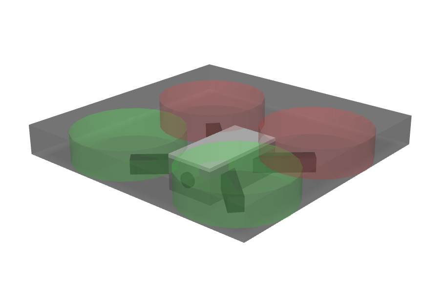
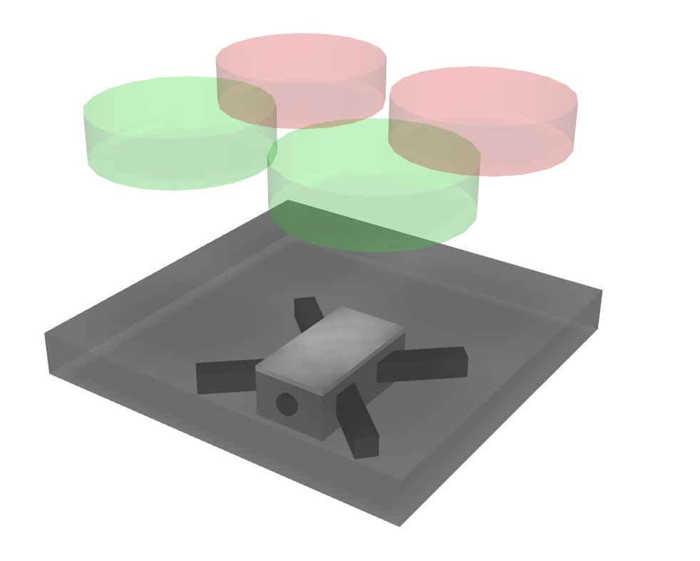
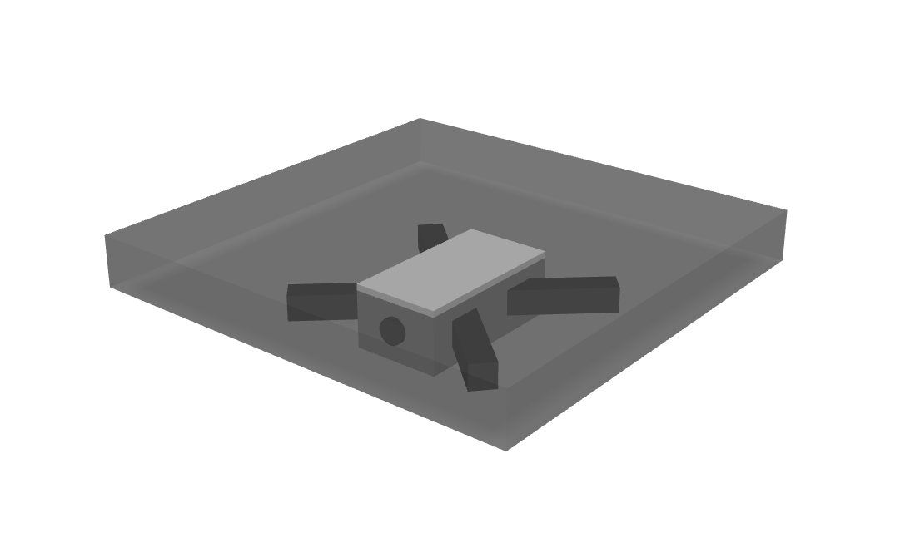
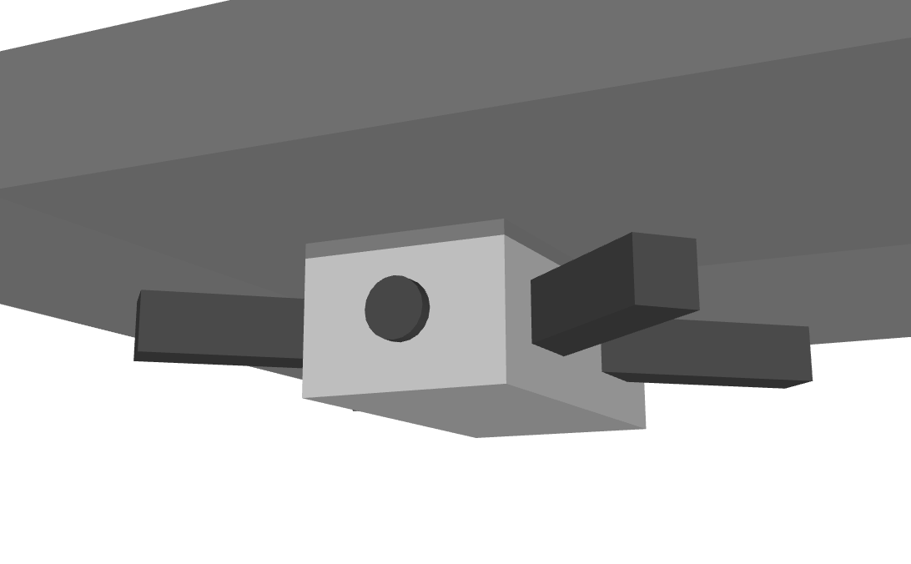
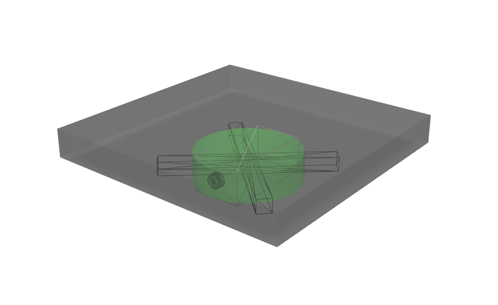
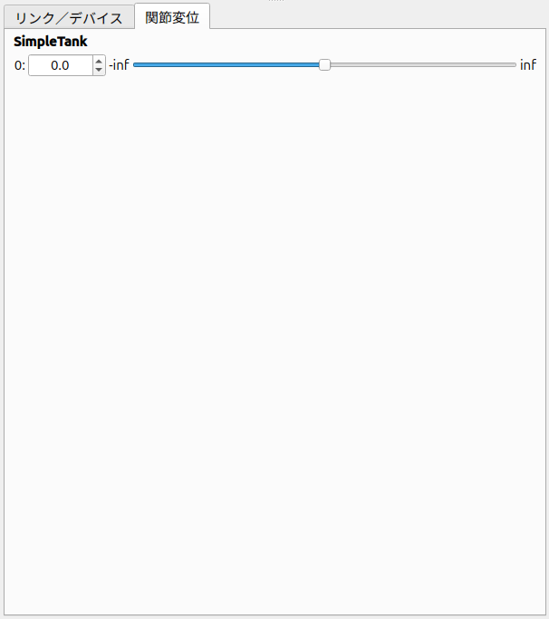
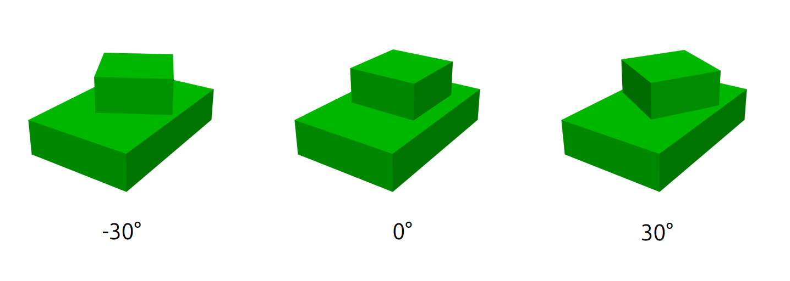

Step 0: Creating a drone model
This page contains a tutorial describing how to format Body files, the standard model file used on Choreonoid.
Drone model
The model we will be working with is the "Drone" model shown below.
{kind=link}

This is a model composed of four rotor links, and four virtual rotors, with a camera, a IMU and battery mounted as devices. Drone is a simplified small toy drone, and has the same basic structure.
Basic Model Structure
The Drone consists of five parts as shown in the figure below.
{kind=link}

The base part is the chassis. The upper part of the chassis is equipped with rotors. This part consists of four components: a base for the rotor links that is applied thrusts and and anti-torques by using the virtual rotors. These five parts are modeled as "links." The chassis part is the central part of the model and is modeled as the "root link." Each model must have exactly one root link defined. The four rotor links are each modeled as fixed joints. This is to simplify the simulation and achieve real-time performance. Consequently, while actual drones generate thrust by rotating propellers, our simulator does not require a mechanism for propeller rotation. The hierarchical structure (parent-child relationships) between these links is as follows:
- Chassis (root)
+ Front Right Rotor (Fixed joint)
+ Front Left Rotor (Fixed joint)
+ Rear Left Rotor (Fixed joint)
+ Rear Right Rotor (Fixed joint)
In this tutorial, we will describe the shape of each link as text directly in the model file. This allows us to complete the modeling with just text files, without using shape data created with CAD or modeling tools. However, it is also possible to use shape data created with CAD or modeling tools. Please refer to Using external mesh files for more information on this.
Preparing the Model File
Body format model files are created as text files. The file extension is usually ".body". To start creating a model file, first create an empty text file using a text editor and save it with an appropriate filename with the ".body" extension. In this case, we'll save it as "drone.body". This tutorial will explain the contents of that file while showing an example of the creation process leading to completion. The complete description can be found in Full description of the drone model file.
注釈
When creating model files using Ubuntu's standard text editor "gnome-text-editor," selecting "YAML" in the settings dialog displayed from the main menu's "View" - "Highlight Mode" will provide syntax highlighting suitable for YAML format, making it easier to edit.
About YAML
Body files use YAML as the base description format. While you can generally understand how to write YAML by reading the explanation below, for more detailed information, please refer to the YAML specification and various tutorial articles.
Writing the Header
First, write the following as the model file header using YAML mapping: Append the following to "drone.body."
format: ChoreonoidBody
formatVersion: 1.0
angleUnit: degree
name: Drone
The first line allows this file to be recognized as a Choreonoid model file.
format_version is used to distinguish between different versions of the description format. Currently, version 2.0 is the latest. In this section, we will use Version 1.0 to explain the description method; however, it is perfectly acceptable to use Version 2.0 instead.
The model name is written in "name". Here we set it as "Drone".
注釈
Keys used in Body files are basically named in "snake case" format. This means writing all key strings in lowercase and connecting multiple words with underscores (_). The "format_version" above is also in this format. However, in older versions of Choreonoid, all keys were named in "lower camel case." This capitalizes the first letter of each word boundary, resulting in descriptions like "formatVersion". Previously defined lower camel case keys can still be read for compatibility, but please use the new format going forward. Note that some keys are still only defined in lower camel case.
注釈
When the description format version is 1.0, you can also specify the unit for angles described in the Body file. Specifically, if you specify "degree" for "angleUnit", it uses degrees, and if you specify "radian", it uses radians. However, this can cause confusion, so version 2.0 always uses degrees for description.
Writing Links
Information about the links that the model has is written in "links:" as follows:
links:
-
Description of link 1 (root link)
-
Description of link 2
-
Description of link 3
...
This way, you can describe any number of links as a YAML list. The description part of each link is called a "Link node." The first Link node described is considered the model's root link.
Link Node
Link nodes are written in YAML mapping format. The following parameters are available as mapping elements.
Key |
Content |
|---|---|
name |
Link name |
parent |
Parent link. Specified by the parent link's name (string written in name). Not used for root link |
translation |
Relative position of this link's local frame from parent link. For root link, used as default position when loading model |
rotation |
Relative orientation of this link's local frame from parent link. Orientation is expressed with 4 numbers corresponding to rotation axis and rotation angle (Axis-Angle format). For root link, used as default orientation when loading model |
jointType |
Joint type. Specify one of fixed (fixed), free (unfixed root link), revolute (rotational joint), prismatic (linear joint), pseudo_continuous_track (simple continuous track) |
jointAxis |
Joint axis. Specify the direction of the joint axis as a list of 3 elements of a 3D vector. The value should be a unit vector. If the joint axis matches any of X, Y, Z in the link's local coordinates, it can also be specified by the corresponding axis character (one of X, Y, Z). |
jointRange |
Joint range of motion. List the minimum and maximum values as two values. By writing the value as unlimited, you can remove range restrictions. If the absolute values of minimum and maximum are the same with negative and positive signs respectively, you can write just the absolute value (as a scalar value) |
jointId |
Joint ID value. Specify an integer value of 0 or greater. Any value that doesn't duplicate within the model can be specified. If the link is not a joint (root link or jointType is fixed) or if access by ID value is not needed, it doesn't need to be specified |
centerOfMass |
Center of mass position. Specified in link local coordinates |
mass |
Mass [kg] |
inertia |
Moment of inertia. List 9 elements of the inertia tensor matrix. Due to the symmetry of the inertia tensor, you may list only the 6 elements of the upper triangular part. |
elements |
Describe child nodes that constitute the link's components |
Writing the Chassis Link
Let's first write the root link corresponding to the chassis part of this model. Write the corresponding Link node under links as follows: Append the following to "drone.body."
links:
-
name: CHASSIS
translation: [ 0, 0, 0.03 ]
jointType: free
centerOfMass: [ 0, 0, 0 ]
mass: 0.093
inertia: [
1.43e-05, 0, 0,
0, 3.76e-05, 0,
0, 0, 4.22e-05 ]
Since indentation on each line also defines the data structure in YAML, be careful to maintain proper indentation alignment in the above description. In the link definition, first set a name to identify the link. Here, we have:
name: CHASSIS
which sets the name to "CHASSIS".
Root Link-Specific Description
In the CHASSIS link, we have:
translation: [ 0, 0, 0.03 ]
which sets the initial position when loading the model. (To be precise, this is the position of the root link origin in the world coordinate system.) translation is normally a parameter that represents the relative position from the parent link, but the root link has no parent link. Instead, it is considered as the relative position from the world coordinate origin when loading the model. Note that the initial orientation can also be set using rotation. If you don't care about the initial position, you don't need to set these parameters. Here, by setting the Z coordinate value to 0.03, we set the initial position of the root link to be raised 0.03[m] in the Z-axis direction. This allows the bottom surface of the crawlers to coincide exactly with the Z=0 plane when loaded, while keeping the root link origin at the center of the chassis. Since environmental models often use this as the floor surface, the above setting makes it easy to align with that.
Next, with:
jointType: free
we set that this model is a model that can move freely in space. jointType is normally a parameter that specifies the type of joint connecting parent and child links, but for the root link the meaning is slightly different - it specifies whether the link is fixed to the environment or not. If you specify "fixed" here, the link becomes fixed, so set it that way for manipulators whose base is fixed to the floor. On the other hand, for models like this one that are not fixed to a specific location, specify "free" here.
Writing Rigid Body Parameters
Each link is usually modeled as a rigid body. The Link Node for describing this information includes centerOfMass, mass, and inertia. For the CHASSIS link, these are written as follows:
centerOfMass: [ 0, 0, 0 ]
mass: 0.093
inertia: [
1.43e-05, 0, 0,
0, 3.76e-05, 0,
0, 0, 4.22e-05 ]
centerOfMass describes the center of mass position in the link's local coordinates. The local coordinate origin of the CHASSIS link is set at the center of the chassis, and the center of mass is also set to coincide with it. mass specifies the mass, and inertia specifies the matrix elements of the inertia tensor. Here we have set appropriate values for the inertia tensor. In practice, please set appropriate values using proper calculations or CAD tools. Since the inertia tensor is a symmetric matrix, it's OK to write only the 6 elements of the upper triangular part. In this case, the above values can be written as:
inertia: [
1.43e-05, 0, 0,
0, 3.76e-05, 0,
0, 0, 4.22e-05 ]
Note that rigid body parameters can also be written independently using a "RigidBody" node. This will be explained later.
Writing the Chassis Shape
The shape of the link is written under "elements" in the Link node. For the CHASSIS link, it is written as follows: Append the following to "drone.body."
elements:
-
type: Shape
geometry: { type: Box, size: [ 0.065, 0.035, 0.025 ] }
appearance: { material: { diffuseColor: [ 0.8, 0.8, 0.8 ] } }
-
type: Shape
rotation: [ 0, 0, 1, 42 ]
geometry: { type: Box, size: [ 0.01, 0.12, 0.01 ] }
appearance: &BodyAppearance { material: { diffuseColor: [ 0.3, 0.3, 0.3 ] } }
-
type: Shape
rotation: [ 0, 0, 1, -42 ]
geometry: { type: Box, size: [ 0.01, 0.12, 0.01 ] }
appearance: *BodyAppearance
-
type: Shape
translation: [ 0, 0, 0.02 ]
geometry: { type: Box, size: [ 0.17, 0.175, 0.02 ] }
appearance: { material: { diffuseColor: [ 0.3, 0.3, 0.3 ], transparency: 0.5 } }
This part is a "Shape node". The shape displayed in the scene view when you loaded the model file earlier is described here. In the Shape node, geometry describes the geometric shape and appearance describes the surface appearance. This time we specified "Box" for the geometry type to describe a Box node that represents a box-shaped (cuboid) geometric shape. In the Box node, the lengths in the x, y, and z axis directions are written as a list for the size parameter. Other shape nodes such as sphere (Sphere), cylinder (Cylinder), and cone (Cone) can also be used. For appearance, we describe material which describes the surface material. The following parameters can be set in material:
Key |
Content |
ambient |
Specifies the scalar value of the reflection coefficient for ambient light. The value range is 0.0 to 1.0. Default is 0.2. |
diffuse |
Describes the RGB values of the diffuse reflection coefficient. RGB values are a list of three components for red, green, and blue, with each component value ranging from 0.0 to 1.0. |
emissive |
Specifies the RGB values of the emissive color. Default is disabled (all components are 0). |
specular |
Describes the RGB values of the specular reflection coefficient. Default is disabled (all components are 0). |
specular_exponent |
A parameter that controls the sharpness of specular reflection. Larger values make highlights smaller and sharper, creating an appearance like metal or polished surfaces. Set a value of 0 or greater. Default is 25. Values around 100 start to look metallic. |
shininess |
An old parameter that controls the sharpness of specular reflection. This is specified in the range 0 to 1. Do not use this parameter in the future. |
transparency |
Specifies transparency. The value is a scalar from 0.0 to 1.0, where 0.0 is completely opaque and 1.0 is completely transparent. Default is 0.0. |
Here we set the three parameters diffuse, specular, and specular_exponent to represent a green material with somewhat metallic luster.
注釈
For such shape descriptions, although the syntax and key names differ somewhat, the structure, shape types, and parameters largely follow those defined in VRML97 (such as Shape, Box, Sphere, Cylinder, Cone, Appearance, Material, etc.). Since VRML97 was the format used as the base for OpenHRP format model files, those with experience using it should find it easy to understand.
注釈
As mentioned at the beginning, in this tutorial we describe the shape of each link as text directly in the model file using the above description method. It is also possible to use shape data files created separately with modeling tools or CAD tools. This is explained in other documents.
Checking the Model Being Edited
Although we have only written the root link, this already constitutes a valid model. Let's load the file being edited in Choreonoid to display it and check if it's written correctly. Select "File" - "Load" - "Body" from the main menu and select the target file in the dialog that appears. If you enable "Check in item tree view" on the dialog or click the item's checkbox after loading, it should be displayed in the scene view as follows.
{kind=link}

If an error occurs when loading the item or if it doesn't display properly after loading, please check the content written so far. When reloading a model file after modification, if the previous file is already loaded as a body item, you can easily reload it using the item's "reload function". This can be done by either of the following operations:
Select the target item in the item tree view and press "Ctrl + R".
Right-click the target item in the item tree view and select "Reload" from the menu that appears.
When you reload, the updated file is reloaded immediately, and (if there are no loading errors) the current item is replaced with it. If there are changes to the shape or other aspects in the updated file, the display in the scene view immediately reflects this. Using this function, you can edit model files relatively efficiently while directly editing text files. You will perform this "reload" operation many times as you progress through this tutorial, so please remember it.
Setting Anchors
In the above code, we have:
appearance: &BodyAppearance { material: { diffuseColor: [ 0.3, 0.3, 0.3 ] } }
where "&BodyAppearance" is added immediately after appearance. This corresponds to YAML's "anchor" feature, which allows you to name a specific part of YAML and reference it later. This makes it possible to omit repetitive descriptions by setting an anchor on the first description and referencing it for the rest. The part that references an anchor is called an "alias" in YAML. Since we will apply the same material parameters set for appearance in Writing the Chassis Shape, we set an anchor here so it can be reused there. The actual usage is described in Using Aliases.
Writing elements
In model files, a collection of information about a component is called a "node". We have introduced Link nodes and Shape nodes as examples so far. Some nodes can contain subordinate nodes as their child nodes. This allows nodes to be described hierarchically. A general method for doing this is the elements key. In elements, child nodes are basically written using YAML's list notation as follows:
elements:
-
type: Node type name
key1: value1
key2: value2
...
-
type: Node type name
key1: value1
key2: value2
...
If subordinate nodes can also contain elements, you can deepen the hierarchy as follows:
elements:
-
type: Node type name
key1: value1
elements:
-
type: Node type name
key1: value1
elements:
...
In this way, using elements makes it possible to describe structures that combine multiple types of nodes. Note that if only one node of a certain type is included under elements, the following simplified notation can also be used:
elements:
Node type name:
key1: value1
key2: value2
...
There's not much difference from the previous one, but this notation is slightly simpler as it doesn't use list notation. Link nodes can contain various elements such as shapes and sensors using this elements. Other nodes that can use elements include Transform and RigidBody nodes.
注釈
When a model has multiple links, the relationships between links are generally hierarchical. While it might be considered to describe this using elements of Link nodes, this format of model files does not use such description. This is because such description would deepen the text hierarchy in the model file as the link hierarchy deepens, making it difficult to check and edit as text. The link hierarchy is described using the "parent" key of Link nodes.
Using Aliases
In the shape description above, since the appearance can be the same as the CHASSIS link, we will reuse the content set in Writing the Chassis Shape. We set an Setting Anchors with the name "BodyAppearance" for the appearance of the CHASSIS link. Here we call that content with:
appearance: *BodyAppearance
as a YAML alias. By adding "*" to the name set with an anchor, you can reference it as an alias.
Writing Devices
In robot models defined in Choreonoid, equipment such as sensors mounted on robots are called "devices". This Drone model will be equipped with 3 devices: a camera, IMU and battery. Below we explain how to write these devices.
Writing the Camera
The Camera node defines a vision sensor.
Key |
Content |
type |
Camera |
format |
Specify the type of information to be acquired from the sensor
・COLOR : Acquire color information
・DEPTH : Acquire depth information
・COLOR_DEPTH : Acquire color and depth information
・POINT_CLOUD : Acquire 3D point cloud
・COLOR_POINT_CLOUD : Acquire color information and 3D point cloud
Note: Internally, when format is COLOR, it is treated as Camera, and when format is other than COLOR, it is treated as RangeCamera.
|
lens_type |
Specify the type of lens (only valid when format is COLOR)
・NORMAL : Normal lens (default)
・FISHEYE : Fisheye lens
・DUAL_FISHEYE : Omnidirectional camera
|
on |
Specify camera ON/OFF with true/false |
width |
Image width |
height |
Image height (automatically determined from width value when lens_type="FISHEYE","DUAL_FISHEYE") |
field_of_view |
Camera field of view angle (cannot be specified when lensType="DUAL_FISHEYE") |
near_clip_distance |
Distance from viewpoint to near clipping plane |
far_clip_distance |
Distance from viewpoint to far clipping plane |
frame_rate |
How many images per second the camera outputs |
optical_frame |
Specify the camera coordinate system
・gl : OpenGL coordinate system (default)
・cv : OpenCV coordinate system
・robotics : Robotics coordinate system
|
In the default "gl" coordinate system, the negative Z-axis direction is the camera lens front direction, and the Y-axis is the camera upward direction. In the "robotics" coordinate system, the lens orientation matches the coordinate system commonly used in robotics with the forward X-axis and upward Z-axis, making it easier to handle when you want to point the lens forward.
注釈
that the gl coordinate system is used in Choreonoid's internal implementation. When optical_frame is other than gl, coordinate transformation to the gl coordinate system is performed internally.
Let's also add a camera device. Add the following under the elements of the CHASSIS link: Append the following to "drone.body."
-
type: Camera
name: Camera
translation: [ 0.0325, 0, 0 ]
rotation: [ [ 1, 0, 0, 90 ], [ 0, 1, 0, -90 ] ]
format: COLOR
fieldOfView: 62
nearClipDistance: 0.06
width: 640
height: 480
frameRate: 30
elements:
-
type: Shape
rotation: [ 1, 0, 0, 90 ]
geometry: { type: Cylinder, height: 0.005, radius: 0.005 }
appearance: { material: { diffuseColor: [ 0.3, 0.3, 0.3 ] } }
Cameras are written using Camera nodes. In this node, specify the format of images to acquire with format. You can specify one of the following three:
COLOR
DEPTH
COLOR_DEPTH
If you specify COLOR, it becomes a normal color image. For DEPTH, you get a depth image. For COLOR_DEPTH, you can acquire both types of images simultaneously. This is intended for simulating RGBD cameras like Kinect. Also, specify the image size (resolution) with width and height. Here we set a resolution of 320x240. Furthermore, set the image acquisition frame rate with frame_rate.
Writing Camera Position and Orientation
The camera position is set slightly below the light with:
translation: [ 0.0325, 0, 0 ]
For camera orientation, by default the positive Y-axis corresponds to the camera's up direction and the negative Z-axis corresponds to the camera's front (viewing) direction. If you want to point the camera in a different direction, you need to change the camera's orientation using rotation of Transform Node or Transform Parameters. In this model, since the Z-axis is taken as vertically upward, the camera would face downward with the default orientation. So we set the desired camera orientation by writing:
rotation: [ [ 1, 0, 0, 90 ], [ 0, 1, 0, -90 ] ]
in the upper Transform node. The method of specifying orientation with rotation was explained in Writing Link Relative Position as a pair of rotation axis and rotation angle. Here we have two such pairs. Actually, rotation can be written by listing multiple orientation expressions like this. In this case, the orientation values (rotation commands) are applied in order from right to left. (It's the same as applying matrix multiplication in this order, considering each element as a rotation matrix.) Here we first rotate -90 degrees around the Y-axis with [ 0, 1, 0, -90 ]. This makes the camera face forward. However, in this state the camera's up direction is still the model's left direction, resulting in an image as if the camera were lying on its side. So we further rotate 90 degrees around the X-axis with [ 1, 0, 0, 90 ] to stand the camera up and obtain the desired image. While it's possible to combine these two rotations into a single rotation expression, such combined values are difficult to intuitively understand or calculate. In contrast, by combining multiple rotations as above, such textual description becomes easier.
Camera Shape
Here we add a cylinder shape representing the camera lens. This makes the model display look like this:
{kind=link}

Note that in the camera definition we have:
nearClipDistance: 0.06
This shifts the range of the external world captured in the camera image slightly forward from the camera center point. Since we've added a camera shape, without this the forward view would be blocked by that shape. By including this description, it becomes possible to capture the area outside the camera shape in the camera image.
Writing the IMU
The Imu node defines an IMU (Inertial Measurement Unit) that integrates a 3-axis acceleration sensor and a 3-axis angular velocity sensor. In this tutorial, the IMU is used to calculate the attitude of a drone while it is in flight.
Key |
Content |
type |
Imu |
max_acceleration |
Maximum measurable acceleration. Specify as a list of 3 elements of a 3D vector. |
max_angular_velocity |
Maximum measurable angular velocity. Specify as a list of 3 elements of a 3D vector. |
Let's also add a IMU device. Add the following under the elements of the CHASSIS link: Append the following to "drone.body."
-
type: IMU
name: Imu
maxAcceleration: [ 1000.0, 1000.0, 1000.0 ]
maxAngularVelocity: 1000.0
Writing the BatteryDevice
BatteryDevice is an original device developed by JAEA to simulate battery consumption. Its energy level decreases as the simulation progresses. By integrating this device with the aforementioned Rotor device, you can simulate scenarios where a drone loses thrust and shuts down once the battery is depleted.
Key |
Content |
|---|---|
type |
BatteryDevice |
maxCapacity |
The maximum capacity of the battery (mAh). |
current |
The current consumption of the device (mA). |
Let's also add a BatteryDevice. Add the following under the elements of the CHASSIS link: Append the following to "drone.body."
-
type: BatteryDevice
name: FlightBattery
maxCapacity: 1100
current: 5077
Writing the Rotor Link
Next, attach the links used for mounting the rotors to the CHASSIS link. Append the following to "drone.body."
-
name: ROTOR_FR
parent: CHASSIS
translation: [ 0.04, -0.045, 0.015 ]
jointType: fixed
centerOfMass: [ 0, 0, 0 ]
mass: 0.0005
inertia: [
1.92e-07, 0, 0,
0, 1.92e-07, 0,
0, 0, 3.52e-07 ]
elements:
- &rotor_shape1
type: Shape
rotation: [ 1, 0, 0, -90 ]
geometry: { type: Cylinder, height: 0.02, radius: 0.0375 }
appearance: { material: { diffuseColor: [ 0.3, 0.8, 0.3 ], transparency: 0.8 } }
Writing Link Relative Position
The Rotor link is modeled as a child link of the CHASSIS link. To do this, first with:
parent: CHASSIS
we explicitly state that this link's parent link is CHASSIS. Next, we specify the relative position (offset) of this link from the parent link. This is done with the translation parameter, which for this link is:
translation: [ 0.04, -0.045, 0.015 ]
This sets this link's origin at a position 4[cm] forward, -4.5[cm] right, and 1.5[cm] upward from the CHASSIS link origin. This position is based on the parent link's coordinate system. To confirm the effect of relative position, let's try removing the translation description. Delete the translation line above or comment it out by adding # at the beginning of the line, then reload the model. You should find that the rotor part that was visible earlier has disappeared. This is because the rotor part is also placed at the center of the chassis and is buried inside it. So, turn ON Wire Frame Display in the scene view. You should see something like this:
{kind=link}

With wireframe display, you can confirm that the rotor part is buried inside the chassis. As you can see, to properly position links, you need the translation description as before. Try changing this value to see what happens. Note that relative orientation (coordinate system direction) can also be specified using the rotation parameter. rotation is written in the form:
rotation: [ x, y, z, θ ]
This specifies orientation (rotation) with a rotation axis and rotation angle around that axis, where x, y, z specify the unit vector of the rotation axis and θ specifies the rotation angle. When format_version is 2.0, θ is always written in degrees. (Other parameters that specify angles are basically the same.)
An actual example of using this parameter will be introduced later.
Writing the Joint
This tutorial does not use translational and rotational joints. However, for your reference, we will also cover how to describe them. Information about this is described by the following parameters of link:
jointType: revolute
jointAxis: -Z
jointRange: unlimited
jointId: 0
Here we first specify revolute for jointType. This sets a rotational joint between this link and the parent link. (This is a 1-degree-of-freedom rotational joint, also called a hinge.) jointAxis specifies the joint axis. For a hinge joint, specify its rotation axis here. You can specify this using the letters X, Y, Z, or as a 3D vector. In either case, the axis direction is described in the link's local coordinate system. Here we specify "-Z" to set the negative Z-axis direction as the rotation axis. When specifying the joint axis as a 3D vector, it would be:
jointAxis: [ 0, 0, -1 ]
With this notation, you can set any orientation as the axis, not just X, Y, or Z axes. Since the Z-axis is usually set vertically upward, including in this model, this joint performs yaw axis rotation. Since the direction is negative Z-axis, positive joint angles correspond to rightward rotation and negative angles to leftward rotation. The joint position is set at this link's origin. From the parent link's perspective, this position is the one set earlier with translation. Other jointType options include "prismatic" for linear joints. In this case, jointAxis specifies the linear motion direction.
The joint range of motion is set using jointRange. Here we specify unlimited to have no range restrictions. If you want to set a range, write:
jointRange: [ -180, 180 ]
listing the lower and upper limit values. For rotational joints, angle values are also written in degrees. Here we specify a range from -180° to +180°. If the absolute values of the lower and upper limits are the same, you can also write just the absolute value as:
jointRange: 180
jointId sets the ID value (integer 0 or greater) assigned to this joint. ID values can be referenced on Choreonoid's interface and used to specify which joint to operate. Robot control programs can also use this value to identify joints. This value is not automatically assigned; appropriate values must be explicitly assigned when creating the model. It's not necessary to assign ID values to all joints. However, since this value is sometimes used as an index when storing joint angles in arrays, it's preferable to assign consecutive values starting from 0 without gaps.
Checking Joint Operation
To check if the joint is modeled correctly, it's effective to actually move the model's joint on Choreonoid's GUI. Let's try this using the functions introduced in Basics of Robot/Environment Models. First, let's move the joint using Changing the Position and Posture. When you select the model being created in the item tree view, the joint displacement view should look like this:
{kind=link}

This display shows that a joint with joint ID 0 has been defined. Try operating the slider here. You should be able to confirm that the box corresponding to the joint rotates around the yaw axis in the scene view. For example, the model poses when the joint angle is -30°, 0°, and +30° are as follows:
{kind=link}

For the joint, the joint range is unlimited, so the joint slider can move in the range from -360° to +360°. If range restrictions are applied, the slider can be operated within that range. Changing a Joint Angle in the Scene View is also possible. Switch the scene view to edit mode and drag the joint part with the mouse. You should be able to rotate the joint to follow the mouse movement. If it doesn't work well, check the settings on the linked page above.
RigidBody Node
In the above description, Writing Rigid Body Parameters are not written in the Link node but separately using a node called RigidBody. The RigidBody node is specialized for describing rigid body parameters and can describe the three parameters centerOfMass, mass, and inertia. These have the same meaning as when used in Link nodes. By writing this node under elements of a Link node, you can also set rigid body parameters. Conversely, you can think of the ability to write rigid body parameters directly in Link nodes as a simplified notation replacing RigidBody. The advantages of deliberately using RigidBody nodes to describe rigid body parameters include:
Enables sharing of rigid body parameters
Can be written in any coordinate system
Can be written as a combination of multiple rigid bodies
First, since rigid body parameters can be written as independent nodes, applying Setting Anchors and Using Aliases to them enables sharing the same rigid body parameters. This is convenient when modeling mechanisms that use many identical parts. Also, when nodes are independent, Transform Node can be applied individually, making it possible to describe each rigid body's parameters in any coordinate system. Furthermore, since there's no limit to the number of RigidBody nodes used in each link's description, it's possible to describe the link's overall rigid body parameters as a combination of multiple rigid bodies. In this case, rigid body parameters reflecting all RigidBody nodes contained in the link are set as the link's rigid body parameters. Combining this with advantages 1 and 2 enables efficient and maintainable modeling even for complex shapes composed of multiple parts. Note that RigidBody is also a node that supports Writing elements, so it can contain other nodes using this. Here we describe the shape part explained below inside elements. This allows the rigid body's physical parameters and shape to be grouped together under the RigidBody node, making the model structure clearer.
Transform Node
The Transform node is used to transform the coordinate system of content written under its elements. This has the same effect as the translation and rotation parameters of Link nodes described in Writing Link Relative Position. However, it differs in that it targets nodes written under elements of Link nodes and that multiple Transform nodes can be combined. An example of a Transform node is shown below.
type: Transform
translation: [ 0.2, 0, 0 ]
rotation: [ 0, 0, 1, 90 ]
elements:
To see this effect, let's disable the Transform node. You could remove the entire Transform node, but you can reproduce the same result by commenting out the translation and rotation parts as follows:
type: Transform
#translation: [ 0.2, 0, 0 ]
#rotation: [ 0, 0, 1, 90 ]
elements:
In this example, we first rotate 90 degrees around the Z-axis so the joint direction matches the model's front-back direction (X-axis). Then with:
translation: [ 0.2, 0, 0 ]
we move the joint forward 20cm to position it.
Note that the Transform's elements also include the RigidBody node. This means the coordinate transformation above is applied not only to the shape but also to the rigid body parameters described in the RigidBody node. In other words, you can describe the rigid body parameters in the cylinder's local coordinates, which reduces the effort required to calculate the center of mass position and inertia tensor.
Transform Parameters
Instead of using Transform nodes, there's also a method to write translation and rotation parameters directly in the target node. These parameters are called "Transform parameters". For example, since RigidBody nodes also support Transform parameters, the joint can also be written as follows:
-
type: RigidBody:
translation: [ 0.2, 0, 0 ]
rotation: [ 0, 0, 1, 90 ]
centerOfMass: [ 0, 0, 0 ]
mass: 1.0
inertia: [
0.01, 0, 0,
0, 0.1, 0,
0, 0, 0.1 ]
elements:
Shape:
geometry:
type: Cylinder
height: 0.2
radius: 0.02
appearance: *BodyAppearance
We've simply moved the Transform's translation and rotation directly to RigidBody. This makes the description simpler. Internally, the same processing as inserting a Transform node is performed, so consider this a simplified notation method. Transform parameters are also available for Shape nodes and device-related nodes explained later.
Writing the Front Right Rotor
The CFD simulator provides a rotor that serves as the power source for a UAV. This rotor allows for the application of thrust and torque to the UAV. The default direction of the thrust generated by the rotor is the positive Z-axis of the local coordinate system of the link it is attached to. Rotors are defined under the elements field of any link within a Body item, similar to cameras or lights.
Key |
Default |
Unit |
Description |
type |
Rotor |
- |
Specifies the device type. |
name |
- |
- |
Specifies the name of the rotor. |
thrustOffset |
0.0 |
N |
Specifies the offset for the rotor's thrust. |
torqueOffset |
0.0 |
N·m |
Specifies the offset for the rotor's torque. |
symbol |
true |
- |
Specifies whether to show/hide the symbol indicating the rotor's direction. |
Let's also add a virtual rotor device. Add the following under the elements of the CHASSIS link: Append the following to "drone.body."
- &rotor_device { type: Rotor, name: Rotor_FR, symbol: false }
This description is equivalent to the following:
- &rotor_device
type: Rotor
name: Rotor_FR
symbol: false
Writing the Front Left Rotor
Following the example of Front Right Rotor, let's write Front Left Rotor. Append the following to "drone.body."
-
name: ROTOR_FL
parent: CHASSIS
translation: [ 0.04, 0.045, 0.015 ]
jointType: fixed
centerOfMass: [ 0, 0, 0 ]
mass: 0.0005
inertia: [
1.92e-07, 0, 0,
0, 1.92e-07, 0,
0, 0, 3.52e-07 ]
elements:
- { <<: *rotor_shape1 }
- { <<: *rotor_device, name: Rotor_FL }
Writing the Rear Left Rotor
Let's write Rear Left Rotor. Append the following to "drone.body."
-
name: ROTOR_RL
parent: CHASSIS
translation: [ -0.04, 0.045, 0.015 ]
jointType: fixed
centerOfMass: [ 0, 0, 0 ]
mass: 0.0005
inertia: [
1.92e-07, 0, 0,
0, 1.92e-07, 0,
0, 0, 3.52e-07 ]
elements:
- &rotor_shape2
type: Shape
rotation: [ 1, 0, 0, -90 ]
geometry: { type: Cylinder, height: 0.02, radius: 0.0375 }
appearance: { material: { diffuseColor: [ 0.8, 0.3, 0.3 ], transparency: 0.8 } }
- { <<: *rotor_device, name: Rotor_RL }
Writing the Rear Right Rotor
Let's write Rear Right Rotor. Append the following to "drone.body."
-
name: ROTOR_RR
parent: CHASSIS
translation: [ -0.04, -0.045, 0.015 ]
jointType: fixed
centerOfMass: [ 0, 0, 0 ]
mass: 0.0005
inertia: [
1.92e-07, 0, 0,
0, 1.92e-07, 0,
0, 0, 3.52e-07 ]
elements:
- { <<: *rotor_shape2 }
- { <<: *rotor_device, name: Rotor_RR }
If you reload the model and see a model displayed like below, it's complete!